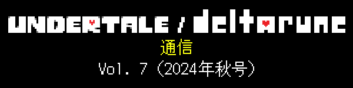
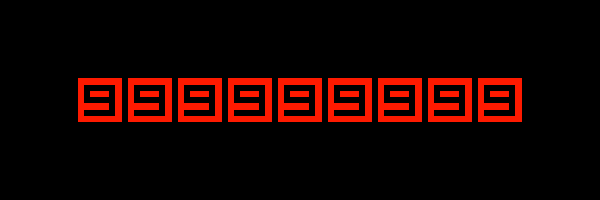
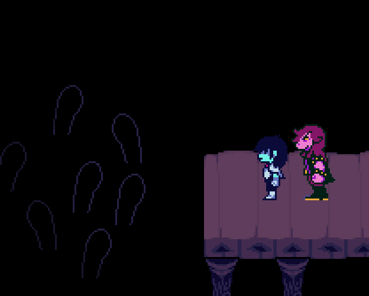
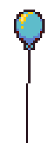

 |
|
今日は、『UNDERTALE』の9周年記念日！めでたい！ |
 |
つまり、8周年記念日から年…『UNDERTALE』がリリースされてから、年ということ。 |
年後も、またお祝いしましょう。 |

さて。「9」とはなんの関係もないですが… |
今年はFangamerから、キッチン用品のスペシャルラインナップが発売されます！ |
|
毎日使えるよ。 |

これは、僕がリクエストしました… |
ヘンテコでかわいい、鍋つかみとして使えるトリエルが、あなたのものに！ちょっとペッタンコですけど…鼻の部分をフカフカにすると、燃えやすくなっちゃうらしいので…＊ |
ちなみに、パペット人形としても使えます。っていうか、そっちのほうがオススメかもしれません… |
＊…マジメな話、他社から発売されている、とある「キャラクターの顔の鍋つかみ」を調べてみたら、法的には鍋つかみとして使えない商品でした。燃えちゃうリスクが高い、ということで… |
牛乳とか、透明じゃない液体を入れて飲み干すと…底にイヌが出現するマグカップ！ |
これも、僕がリクエストして作ってもらいました。子どものころに、こういうカップを持ってたんですよね。底に何かのクリーチャーがいて、だいたい全部飲みおわるまで、見えないようになってました。 |
このカップの仕組みを知らない人に、ホットチョコレートとかを出すのに使ってください！それか、隠れたイヌをダシにして、マズ～いお薬を飲ませる、とか（なお、このカップには善悪の概念がないので、そんなふうに使われた場合に自分がどんな影響を与えるかについては、よくわかっていません）。 |
土みたいに見えるチョコレートケーキを詰めて、ティースプーンでイヌを“発掘”して、出てきたらまた埋めなおす…っていうのも、いいかも。 |
|
限定ポップアップショップ、「パピルス・コラボ・カフェ」！…に行った気持ちになれるお皿、です。 |
…出てくる料理がおいしいかは、怪しいところですが… |
|
一部が透明になっていて、注ぐ液体によって目の色が変わります。 |
…なので、ブルーレモネード以外の飲み物を入れると、別の世界線バージョンのサンズになってしまいます。くれぐれもご注意を。 |
|
あなたの大好物の、あのデザートを作るのにうってつけのパイ皿！ |
そうです、Readerさん。なんのことか、わかりますね…？Butterscotchパイですよ！ |
絶対おいしいヤツですね。僕たちにも作ってもらえます？ |
このエプロン、かわいすぎ！どこがって…言わなくてもわかりますよね… |
ん？Readerさん、何か言いたいことがあるんですか…？ |
「ト〇イフォースにそっくり」？ |
…はぁ。ノーマルコースの読者さんには、そう見えるんでしょうね… |


サンズとパピルスのソルト＆ペッパーシェイカー！2025年に発売予定です。『UNDERTALE』と『DELTARUNE』の開発を手伝ってくれている、Everdraedのアイデアをグッズ化しました。 |
「ソルト（Ｓ）＆ペッパー（Ｐ）」…「サンズ（Ｓ）＆パピルス（Ｐ）」… ネーミングとしては完ぺきですね。 |
塩こしょう入れはもう持ってるよ、という方は、別の粉を入れてみてはどうでしょう？カナダとかの会社が作ってる、ポテチにかけるケチャップ味パウダーとか、粉ミルクとか…骨粉とか。いくらでも思いつきますね。 |
|

前回のレポートでは、Chapter 3と4をリリースするためにやらなければいけないことをご説明しました。 |
「読んでないよ！」という方は、こちらをご覧ください。 |
このうちの、「Chapter 1と2でGameMakerの新機能をテストしてほしい」という件は、現在、いくつかの問題を解決中で、GameMakerチームの対応待ちです。もう少し時間がかかりそうですが…準備ができたら、UNDERTALE / DELTARUNEの公式X（旧Twitter）でお知らせしますね。 |
さて。これを書いているいまは9月3日なので、前回進捗のご報告をしてからまだ1か月しかたっていませんが、そのあいだに進んだことを、簡単に振り返ってみたいと思います。 |
 |
すでにお伝えしているとおり、Chapter 3のメインコンテンツは、だいぶ前に完成しています。 |
日本語ローカライズはチェックの段階に入っていて、ローカライズ会社のハチノヨンさんが、ゲームのコンテンツをすみずみまでチェックして、全部のテキストが日本語できちんと表示されるように調整してくれています。このプロセスは、10月初旬ごろの完了を目指しています。 |
そのあと、10月中旬には、プロの専門チームによるPCバージョンのテストを始められたらいいなと、思っています。 |
|
開発チームが内部用に設定したスケジュールでは、Chapter 3と4のメインコンテンツを完成させる期限は9月1日でした。なので、無事達成できた形です。 |
ということは、Chapter 4のPC版は実質完成していて、あとはバグ修正と日本語ローカライズを残すだけです。 |
Chapter 4の日本語翻訳の準備プロセスは始まっていて、次のメルマガを配信するころには初稿が上がってきていると思います。そのあと、さらにいろいろなプロセスをへて、Chapter 3と同じようにチェックの段階に入ります。 |
ちなみに、あれからさらに何人かの人にChapter 4をプレイしてもらえて、これで合計6回、通しプレイをしてもらえたことになります。みんな気に入ってくれて、僕も改めて、「ああ、完成したんだな」という気持ちです。 |

 |
現在、ローカライズ、コンソール版移植、または修正に関わらないメンバーはみんな、Chapter 5の制作作業を進めています。今後しばらく、開発チームはこの作業に集中することになります。Chapter 5ができあがっていくのが、すごく楽しみです！ |
Chapter 3と4の開発に関しては、僕個人が積極的にできることは全部終わりました。あとはローカライズとテストが完了するのを待つだけです。 |
…この段階までこぎつけて、あとはもう、ただ待つだけというのは…目の前にdelicious foodがあるのに、イスにしばりつけられていて手が届かない、みたいな気分ですね… |
でも…！Chapter 3と4は存在してますよ！あとは、時が来るのを待つだけです！ |
|

今日は『UNDERTALE』のリリース記念日ですが、『DELTARUNE』のお祝いもしていいよね…ってことで…ごめんなさい、今年は、お誕生日まとめてお祝いです。 |
Chapter 2のリリースからもうだいぶたったので、開発当時の資料を一部、公開します！どうぞお楽しみください！ |
|

 |
このメールマガジンをまだ読んでくれているみなさん、本当にありがとうございます。 |
このメールマガジンも、まだ読んでもらえてとてもうれしいです… |
みなさんは、このメールを読んで、うれしいですか？ |
では、こちらのメールもどうぞ。 |
…でも…読んで、うれしくなりましたか？ |
では、今年中に、そして来年に、またお会いしましょう。 |
バイバイ。 |
|